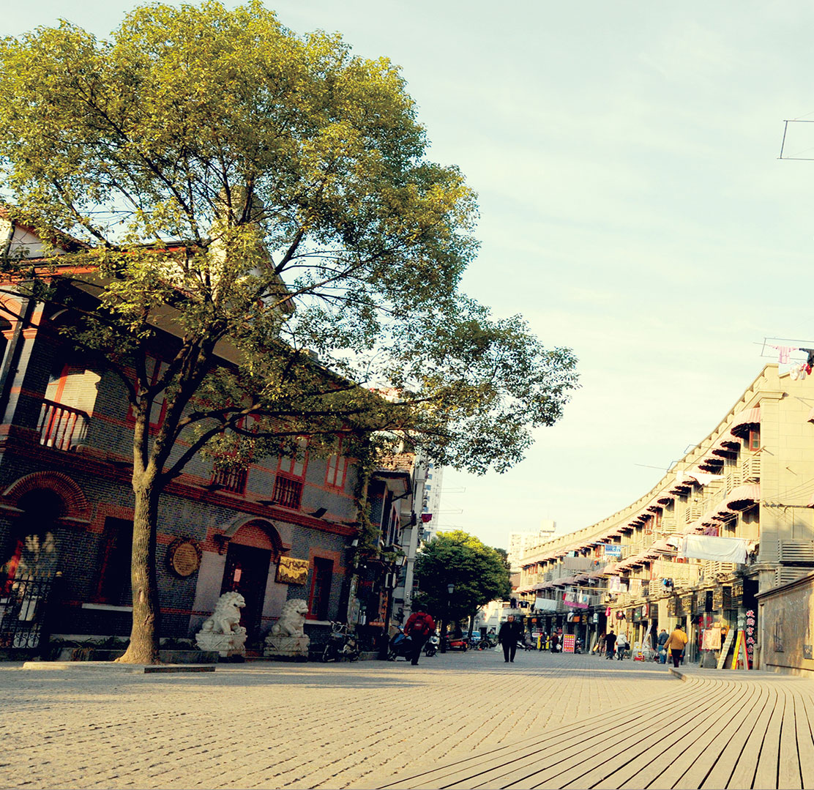

多伦路文化名人街
DUOLUN ROAD CULTURE STREET
多伦路 位于虹口区中部偏西。东起四川北路，向西再折向北到四川北路，成L型。全长500米。多伦路始筑于1911年，以外国传教士窦乐安命名。1943年更名为多伦路。1999年多伦路改建为多伦路文化名人街。
-

景云里
JING YUNLI
建于1925年，为砖木结构石库门房屋
-
鸿德堂
KISTLER MUSEUM
位于多伦路59号
-
中国左翼作家联盟成立大会会址纪念馆
THE MEMORIAL HALL
地址多伦路201弄2号
多伦路文化名人街街简介
Brief introduction of Duolun Road Culture Street
- 
多伦路街景1
多伦路街景2
多伦路街景3
多伦路，原名窦乐安路，位于虹口区东江湾路146号，路不过550米长，却蜿蜒蛇行，曲径道幽。这几年修葺翻新后，再现了20世纪二三十年代的沪上的人文风情。多伦路文化街是上海的一条小街，南傍四川北路商贸闹市，北邻鲁迅公园、虹口足球场，背靠内环高架、轻轨明珠线，动静相间一里有余。街短而窄，路曲且幽。夹街小楼，栉比鳞次，风格各异。多伦路文化街虽在地图上难有立锥之地，但在近现代中国文化史上却是浓墨重彩的一笔。多伦路的路面用石块铺成，路两边的各式洋楼涂饰一新，门面洞开，皆为雅商，字画，古董，红木器具，一路列过去，甚是

街道特色
STREET FEATURES
多伦路的路面用石块铺成，女人的高跟鞋在上面格外的清脆。这条在地图上难觅其踪的小街，在中国近代文化史上却写下了浓重的一笔。诸多彪炳史册的文化名人如鲁迅、瞿秋白、郭沫若、茅盾等曾在这里聚首、呐喊、战斗。从一个侧面集中显现了了这个历史印迹和文化缩影。

景云里
二、三十年代鲁迅、陈望道、茅盾、柔石等大批文化名人曾在此居住
鸿德堂
左联纪念馆
THE MEMORIAL HALL
活动概述
SUMMARY OF ACTIVITIES
多伦路是上海虹口区的一条小街，毗邻山阴路与长春路隔街相望，全长五百多米，路虽短却幽深，夹街小楼，栉比鳞次。象这样的小街小巷，在上海的大小马路中实在是太多了，而这多伦路不同在于它是一个卧虎藏龙之地，在中国近现代史上，这条五百米的街道居住着众多的文化名人，像鲁迅、茅盾、郭沫若、叶圣陶、柔石、冯雪峰及日本友人内山完造等，都曾经在这条小街上生活居住过，多伦路可以说是20世纪二三十年代的文化界的大本营，中华艺术大学旧址曾经是中国左翼作家联盟成立大会的会场，多伦路上铭牌介绍：夏衍、冯雪峰、瞿秋白、柔石、许幸之、潘汉年、张爱萍都在这条小街上活动过；抗战胜利后，这里还有汤恩伯、孔祥熙和白崇禧的公馆，台湾著名作家白先勇的童年就是在多伦路210号的白公馆里度过的，在一条500多米的小街上集